Lesson 3 - Blueprint Communication
Blueprint Communication
Download the Starter Project
Layout uses one Master Starter Project. If you’ve downloaded it recently, chances are you don’t need to re-download it.
This tutorial requires that you’ve downloaded the starter project as of 4/7/16:
- Click here to download the Layout Master starter project.
- Extract the zip folder.
- Open up the Layout_ToyBoxx.uproject and begin your adventure!
In our previous lesson, we learned how to create Blueprint actors with interesting behavior. In this lesson, we will allow the player to interact with objects in the level using simple blueprint communication paradigms. We’ll do this by creating a shooting gallery, similar one you might find in an arcade.
The shooting gallery we will create is a good introduction to blueprint interface design in Unreal Engine. As we learn more about creating experiences, it will become increasingly important that our blueprints communicate sensibly. Blueprints can get complicated quickly if we aren’t careful.
Some of the assets and interactions will be provided, but you will be making most assets yourself, most notably the different types of targets. Here’s a preview of what you’ll be making:
Let’s break the experience down into the pieces that we’ll be making together.
- Basic Target
- Explodes and disappears when shot, awarding points.
- Color Changing Target
- Explodes and disappears when shot, awarding points.
- Randomly changes between red, green, and gold. Each state is worth different point values.
- Pop Up Target
- Explodes and disappears when shot, awarding points.
- Continuously pops up from behind cover, then returns to hiding position.
- Wild Target
- Explodes when shot, awarding points. Does not disappear.
- Moves all over the gallery for a short period of time.
Every target on our to do list involves the player shooting it. Let’s implement a shooting mechanism for the player.
Player Interaction
- Open the starter level Lesson3 > DesktopShootingGallery.
This lesson will take place on the desktop surface we’ve provided.
- Make sure your HMD’s positional tracking camera is enabled and Play in VR. Take a look around.
Notice how the world around you is scaled down. When placed in a tiny world like this, your head movements make a big difference. This is a great way to take advantage of your HMD’s translational degrees of freedom.
Before we get started, let’s create a player and corresponding game mode.
Make a Player
Let’s make a new Pawn Blueprint for our player.
- Right-click in your Content Browser
- Select Blueprint Class from the Create Basic Asset section of the menu.
- Select Pawn in the popup menu.
A Pawn is a special type of Actor that can be controlled by the player.
- Name your blueprint BP_InteractionPlayer.
Game Mode Setup
Currently, our BP_InteractionPlayer is not the default Player Pawn that the level uses. We have to set that up before we can test our new blueprint.
To do that, we have to create a new Game Mode.
- Right-click in the Content Browser
- Select Blueprint Class from the Create Basic Asset section of the menu
- Select Game Mode in the popup menu
- Name your Game Mode ‘ShootingGalleryGameMode’
At this point, we don’t need to open the new game mode blueprint. Instead:
- Go to your toolbar in the Level Editor
- Select Settings > World Settings
- A new tab just opened up next to your Details panel.
- Click the dropdown box next to GameMode Override and select your ‘ShootingGalleryGameMode’.
Right below, you should now be able to edit your Default Pawn Class for the Selected GameMode.
- Select your ‘BP_InteractionPlayer’ from the Default Pawn Class dropdown.
The player will now control a BP_InteractionPlayer when the level is started.
- Press Play to test it out
You might notice that the pawn does not rotate with player input. At the risk of causing some simulation sickness, let’s enable rotation using a new component.
- Return to the BP_InteractionPlayer blueprint.
- Add a BPC Camera Control component.
BPC Camera Control simply takes input from the mouse or game pad and rotates the pawn. If you’re curious, you can pop the hood to see for yourself.
Using Tracing in Blueprint
Tracing (sometimes referred to as raycasting) is a powerful game engine technique that allows us to capture information about a level and its objects. Given an orientaion and location, a trace can determine what exists in the environment along the path it follows. Most commonly, a trace is performed along a line, but we can also trace with shapes like the box, sphere, and capsule.
- Start by placing a Line Trace By Channel node in the event graph.
As you type, you’ll notice a number of Trace node options appear. If you hover over each node name, an informative description will come up. If you can’t be bothered, here is a basic desription of the key differences:
Multi Trace vs Trace:
- A Multi Trace will output an array of all actors that exist along the trace path.
- A Trace will only output the first actor that exists along the trace path from the start position.
Trace by Channel vs Trace for Objects: These options have to do with how the trace should respond to different actors. These settings can be customized in the Collision tab of any collide-able component.
- By Channel traces use a specific Trace Channel and responds to actors depending on how they have their collisions set up.
- For Objects allows you to define which Collision Object Types you want your trace to collide with.
Let’s allow the player to “shoot” (execute a line trace) with left mouse button click. UE4 provides a special click event for convenience.
- Place a Left Mouse Button event.
Now we need to calculate the Start and End point of our trace line:
\begin{equation} \text{Start} = \begin{bmatrix} \text{Camera Location} \end{bmatrix} \end{equation}
\begin{equation} \text{End} = \begin{bmatrix} \text{Camera Location} \end{bmatrix} + \begin{bmatrix} \text{Camera Forward Vector} \end{bmatrix} \times 10000 \end{equation}
The Start will be the camera’s location, and the End will be some distant point in the direction that we’re looking. Here we’ve made the End point 10000cm out in front of us so we are guaranteed to hit everything around us.
Challenge:
Your challenge is to implement the math above. To get the Camera Location and Camera Forward Vector, use Layout’s Get Player VR Camera Properties node.
Using the Get Player VR Camera Properties, Vector + Vector, and Vector * Float nodes, calculate Line Trace By Channel > Start and Line Trace By Channel > End .
At this point the trace is invisible. For debugging purposes, change Line Trace By Channel > Draw Debug Type to For Duration.
You’ll know you’ve done everything right if you see a red square (and a red line if you’re in VR) when you click. That red square marks the location where your trace first hit an actor.
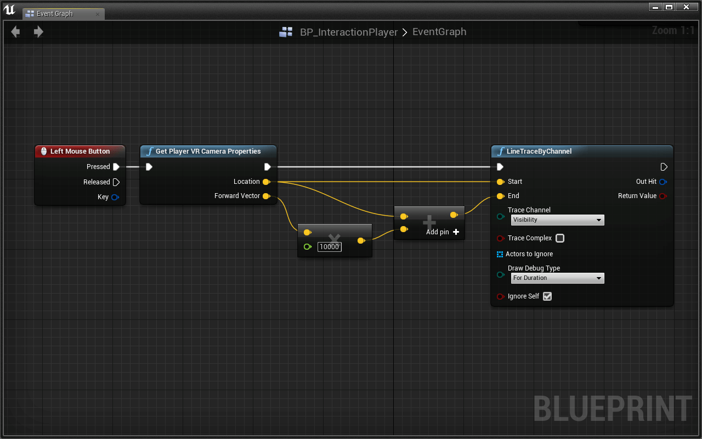
Gaze based interation and VR
Virtual reality requires developers to think differently about interaction design. We sacrifice the convenience of outmoded UI solutions to realize the opportunity of stereoscopic immersion.
The headset provides information about the user’s gaze in the virtual environment. With this information, we can interact with objects in the world intuitively and with little to no peripheral hardware input. We call this interaction model gaze based interaction.
Now that we have a line trace successfully shooting from our eyes when we click, let’s do something with it.
Traces have two outputs:
- An Out Hit structure containing information about what was hit and at what location in the world.
- A Return Value boolean, which tells you whether or not anything was hit at all.
Remember from the variables lesson, Boolean values are either True or False.
Let’s start by printing out the name of the actor that the trace hits. We only want to print a string if anything was hit at all. We can do this using the Line Trace By Channel > Return Value and a Branch.
- Place a Branch
- Line Trace By ChannelBranch
- Return ValueCondition
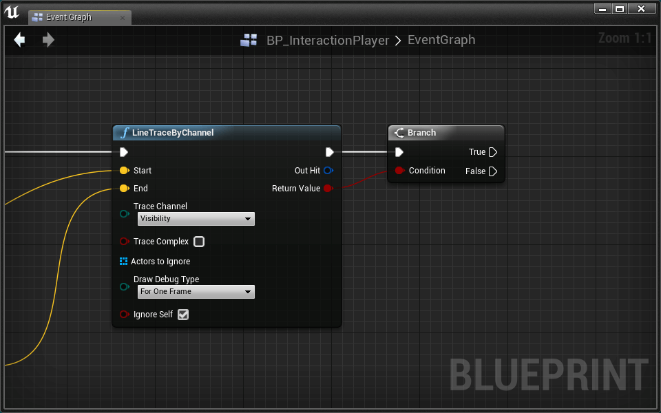
A Branch works by checking a boolean condition and then directing the code down different paths depending on its value. You’ll notice the node has two execution outputs, one labeled True and another labeled False. This is how we can add logic to our code, executing specific code depending on certain conditions.
If you’re familiar with programming, a Branch node is an if statement.
Right now, we only care about when the line trace hits something (i.e. the True output).
- Place a Print String
- Branch > TruePrint String
Now we just have to get the name of the actor our trace hit. To do that, we need to use the trace’s Out Hit information.
- Pull a wire out of Out Hit and place a Break Hit Result.
The Break Hit Result node breaks the Out Hit structure into all the different information it contains. Look at all that info!
- Hit ActorIn String (UE4 will automatically place an intermediary Get Display Name)
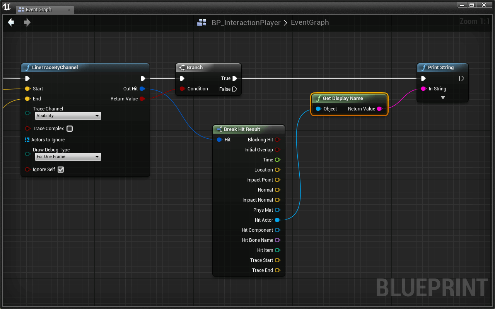
Test it out! You’ll see the printed name of whatever actor you click on.
Interacting With Other Actors
Now that we have a reference to other actors thanks to our Trace, we can easily fire their events and call their functions. This is how we “communicate” between blueprints.
Layout has provided the BP_InteractionTest to get going as fast as possible! The BP_InteractionTest blueprint has a custom event called Interact. Whenever the Interact event is fired, the cube will change colors.
In order to fire the Interact event from our player, we first need to make sure that the actor we traced is in fact a BP_InteractionTest. We do that using a Cast To… node.
- Replace the Print String node with a Cast to BP_InteractionTest node.
- Pull a wire out of the As BP_InteractionTest output and place the blueprint’s Interact node.
- Cast to BP_InteractionTestInteract
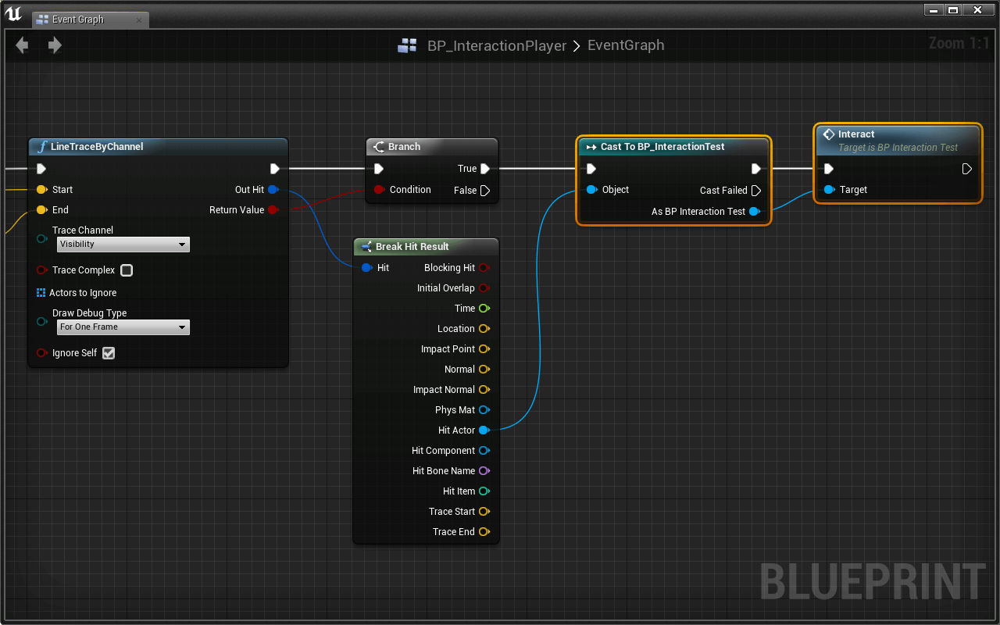
By successfully casting the Hit Actor to a BP_InteractionTest, we were able to call the Interact event only available to the BP_InteractionTest.
Go ahead and test it out. You should be able to look at a BP_InteractTest in the world and make it change colors when you click.
Make a Reticle
Without a reticle, you may have some difficulty targeting actors in the level. Create a VR friendly reticle following the steps in the challenge below.
It’s important to understand the reasoning behind our solution. In a monoscopic (non-VR) experience, we can draw a reticle in screen space. Screen space is the two dimensional coordinate system defined by the width and height of the screen. Stereoscopically, a screen space reticle cannot be viewed correctly at depth in each eye.
The best way to fix this issue is to use a Line Trace and project the reticle out into the world. In this way, our reticle is similar to a laser pointer, resting on the actual object we’re looking at.
To start, let’s create the component what will act as a reticle out in the world:
- Add a Material Billboard component to BP_InteractionPlayer.
- Give it a new Sprite by clicking the + next to Sprite > Elements
- Use the M_Reticle material
- Check the Size Is In Screen Space option
- Set Base Size X: 0.008
- Set Base Size Y: 0.008
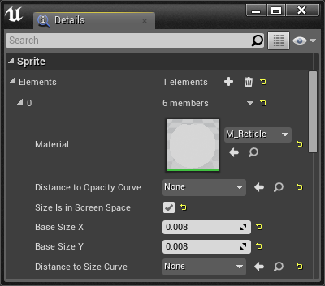
Great! You just added the circular reticle to the player. The options we set up ensure that the reticle always appears the same size, no matter how close or far it is from the player. Also, the M_Reticle material is set up to always draw on top, meaning it will never disappear behind other objects.
At this point, you won’t be able to see the reticle when you press Play. This is because we still have to project it out into the world like a laser dot coming from a laser pointer.
Challenge:
Project the Material Billboard reticle out into the world by updating its location every frame (Tick).
Use a Line Trace by Channel pointing straight from the player’s eyes to determine the proper location for the reticle. Make sure to Break Hit Result to get the proper location.
To update a component’s location like your Material Billboard, drag out a reference to the component and use the Set World Location node.
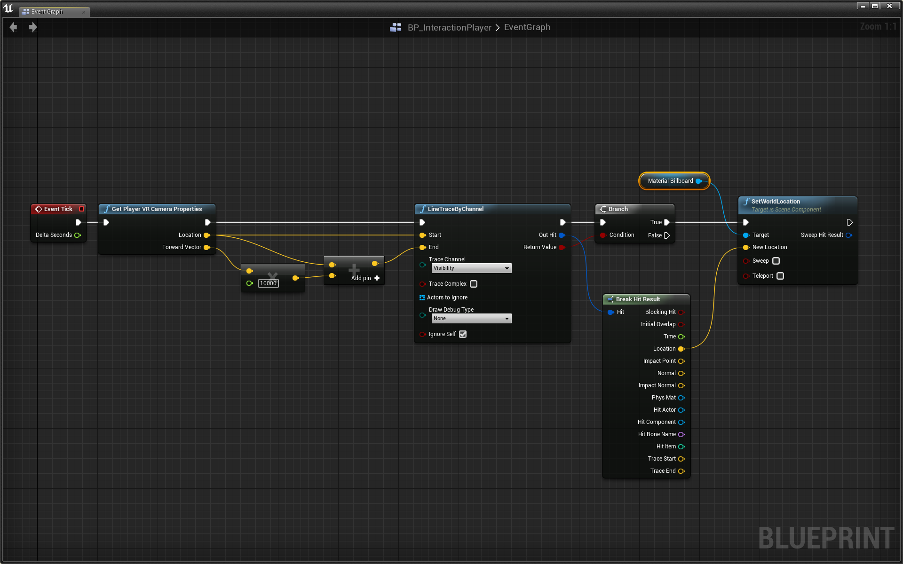
Q: “Why don’t I just attach a billboard to my camera and place it way out in front of my player?”
A: Moving the reticle into world space at a fixed distance from the player works, however it often has strange side effects in VR. Imagine looking at a wall in front of you, yet your reticle appears to be way far behind it. Since we can perceive depth in stereoscopic 3D, having a reticle at a fixed position is not ideal. With our implementation, we allow the viewer to see the reticle and the object it touches simultaneously without changing focus.
Unfortunately, there is one bug with our implementation right now. If you ever look out into the distance to a point where the trace does not hit anything, the reticle remains where is was last. Here’s what it looks like:
Challenge:
Fix the bug! When the Line Trace by Channel does not hit anything, position the Material Billboard some set distance in front of the camera.
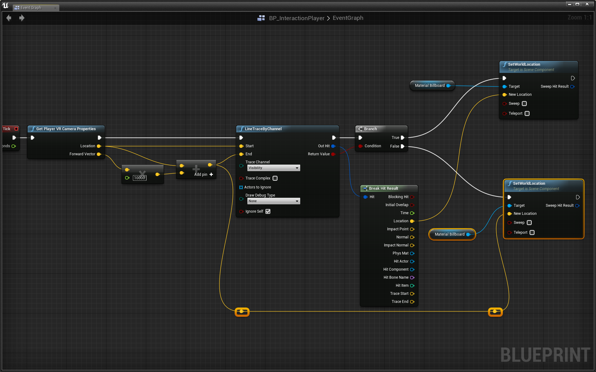
In the challenge image above, you may have noticed a vector wire being redirected around a node. This is accomplished with a Reroute Node which has no purpose other than making a graph more legible.
OK! You should now have a fully functional reticle. This will make interacting with the world so much easier!
Input Bindings
Currently, in our BP_InteractionPlayer blueprint we use the Left Mouse Button event to trigger our Trace. This is fully functional, but can also be improved using Input Bindings!
Input Bindings allow us to associate multiple inputs to one event. In that way, we can have the Space Bar, Left Mouse Button, and a Gamepad Button all fire the same player event. Input Bindings also make it easier to change keybindings, for ourselves and our users.
- Open the Settings menu from the Level Editor Toolbar.
- Select Project Settings
- Go to the Input page using the left sidebar.
There under the Bindings tab you’ll see Action Mappings and Axis Mappings. Layout’s Starter Project has some mappings already created, but you’ll need to add a new one for this lesson.
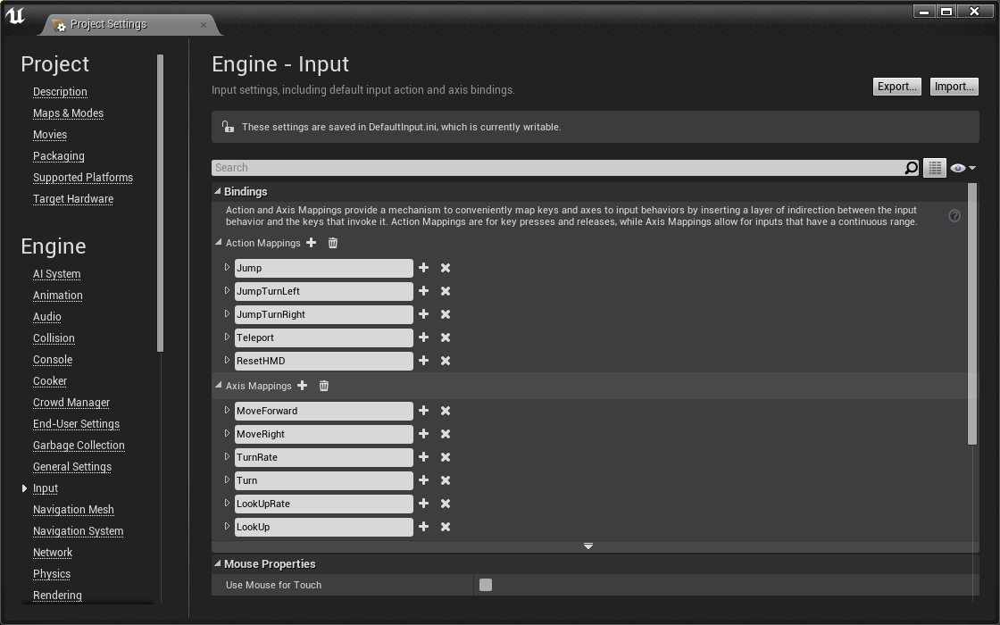
Action Mappings are for single input actions like a key press.
Axis Mappings are for input that change over time like joystick and mouse movement.
We want to bind clicks and button presses. Which type of mapping do we want to make?
- Click the + next to Action Mappings
A submenu should open up, allowing you to name a new Action and map new inputs to it.
- Name the Action Act.
- Bind a Left Mouse Button input to the Act action.
- Click the + next to the Act action twice to bind two more inputs.
- Bind a Space Bar input.
- Bind a Gamepad Face Button Bottom input.
The Act input event will now be fired whenever the player Left Clicks, presses Space Bar, or presses the Bottom Face Button on a gamepad (A on an Xbox controller or X on a Playstation controller). Let’s use the Act event rather than the Left Mouse Button event in our player blueprint.
- Open BP_InteractionPlayer
- Replace Left Mouse Button event with the new Act event.
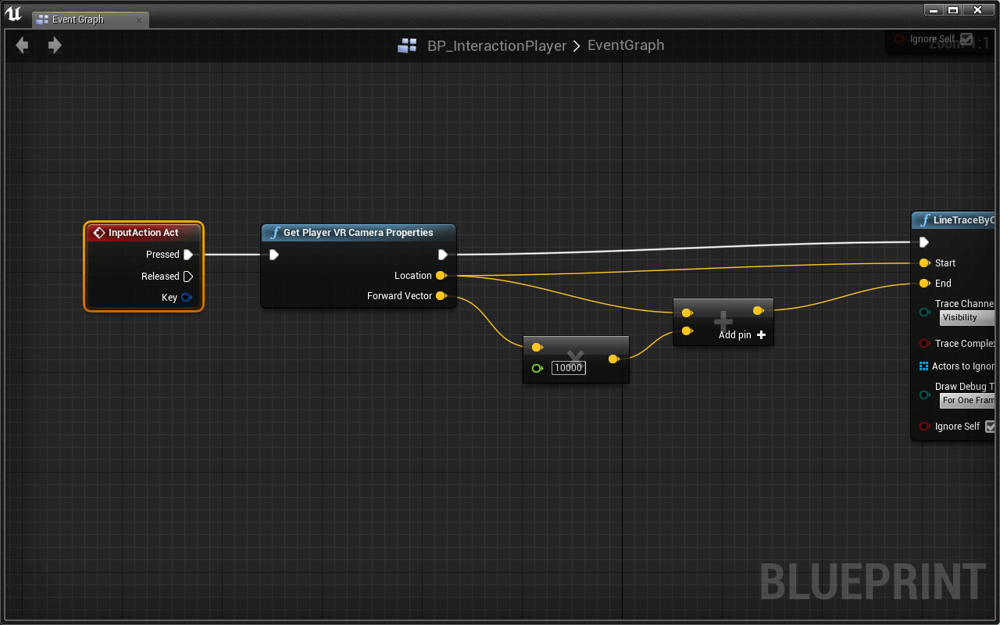
Test it out! All the bound inputs should fire this event.
Exploding Target
Time to create the first, most basic target:
Layout has already provided a target blueprint called BP_Target. Open it and you will see that it is just a scaled down static mesh. It currently doesn’t do anything special with its empty event graph.
Remember, we’re working with a tiny world in this lesson to play with the effects of scale. That’s why the demo target and everything other static mesh is scaled down to about one-tenth size.
Let’s edit this blueprint to explode when it is interacted with.
Interacting With The Target
- Open BP_Target’s Event Graph.
- Right-click in the Event Graph and search Add Custom Event….
- Place the new event node and name it Interact
Since we just added a new event that we want to fire from other places, we need to force UE4 to Compile the new changes.
- Click the Compile button in the upper left section of the Blueprint Toolbar.
If you ever run into strange engine behavior when writing code, make sure to try the Compile button on the appropriate assets.
For now, let’s print a string when the target’s Interact event is fired.
- InteractPrint String
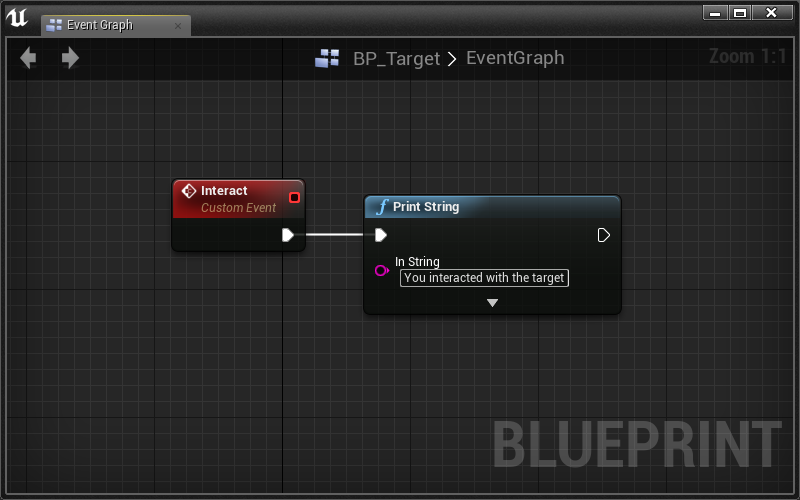
This way, we can test that our player is properly firing the target’s Interact event. Once we have the interaction working, we can customize how the target actually behaves.
- Place a BP_Target in the world.
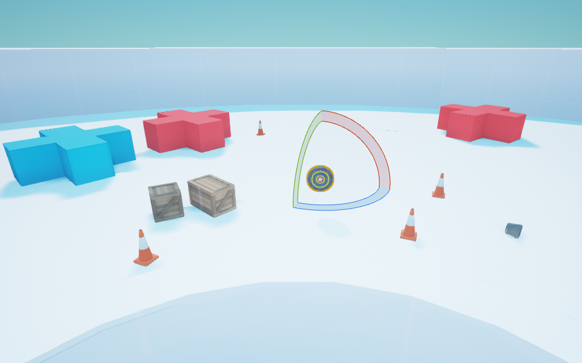
Before we can interact with our target, we have to setup our player to fire the BP_Target’s Interact event.
- Open BP_InteractionPlayer
- Place a Cast to BP_Target node
- Cast To BP_InteractionTest > Cast FailedCast To BP_Target
- Break Hit Result > Hit ActorCast to BP_Target > Object
- Pull a wire out of Cast to BP_Target > As BP_Target and place an Interact (BP_Target) node.
- Cast To BP_TargetInteract
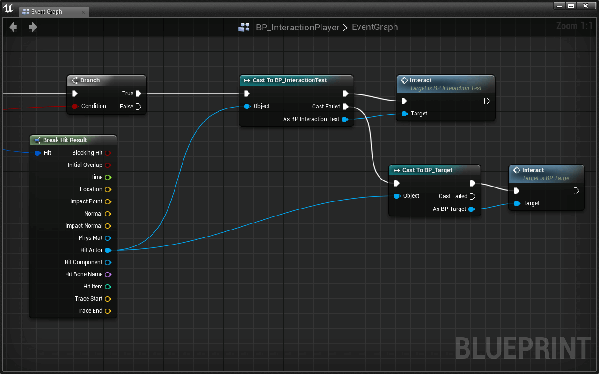
Here we are attempting a chain of Casts. Essentially, we first check if the actor we traced is a BP_InteractionTest. If it is, we fire that actor’s specific Interact (BP_InteractionTest) event. If it is not, the cast fails and we then check if the actor is a BP_Target, calling its specific Interact (BP_Target) event.
Even though the BP_InteractionTest and BP_Target both have events called Interact, they are completely independent of each other. We name them both Interact because that generalizes what BP_InteractionPlayer does. What’s important is that BP_InteractionTest and BP_Target both handle what they do once they are interacted with. In this way, BP_InteractionPlayer just has to Interact with objects.
This concept helps us when we program, allowing us to think about each object individually and not about how each object interacts with everything else.
We’ll talk more about this powerful programming concept later on in this lesson.
Go ahead and test it out! Whenever you click on a BP_Target you should see your string print to the screen.
Now let’s program the BP_Target to actually do something!
Challenge:
Make the BP_Target’s Interact event spawn a P_NeonExplosion_Tiny emitter and destroy the BP_Target actor.
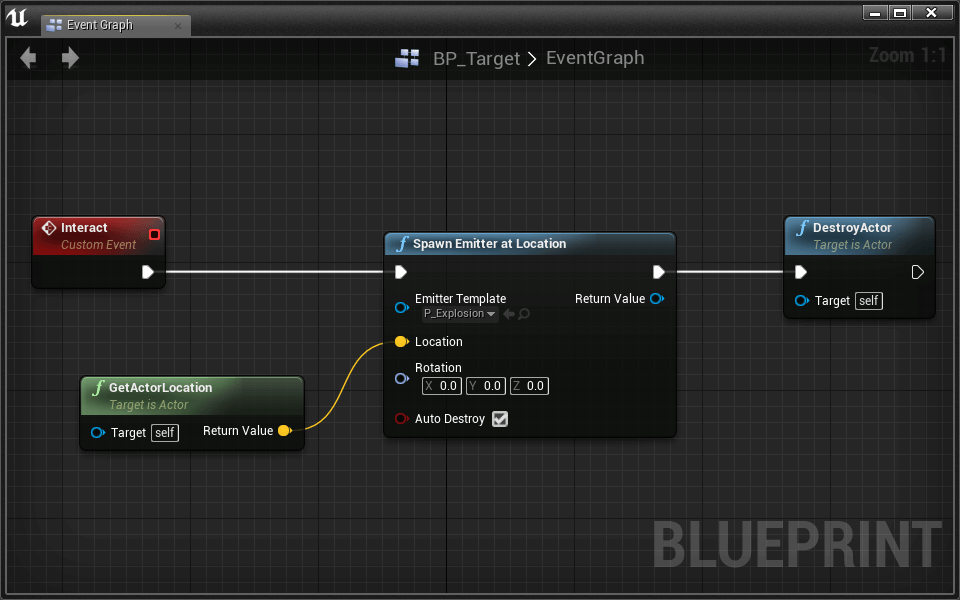
Notice how we have to use the tiny version of our particle emitter. We can scale down the size of an emitter, but that won’t effect the velocities the particles move at. When we build worlds at small scale, we also have to consider that everything must move at lower velocities too.
In the next lesson, we’ll go over a great way to keep everything normal scale while still making the world feel small.
Scoring
How are we going to pwn noobs at the shooting gallery if we can’t keep track of our high scores? Let’s build a script that will store a score that is displayed in the level.
As you might remember from our previous lesson, we store data in Variables. Because our score is a whole number, we’ll use an Integer variable.
Click here to learn about variables and their types if this is unfamiliar to you.
- Open BP_InteractionPlayer
- Click the small + icon next to the Variables tab in the My Blueprint panel.
- Name the variable Score
You’ll notice that the icon next to the name of the variable is red. This means it is a Boolean variable. We want to change it to an Integer variable.
- With the variable selected, go to the Details panel and open the Variable Type dropdown.
- Select Integer.
Now we need to update the score whenever we hit a target. Every time we hit a target, we need to add 1 to our score.
Challenge:
Using a Set Score, a Get Score, and an Integer + Integer node, write code to add 1 to the player’s score every time they hit (interact) a target.
Use a Print String node to print the value of Score to test that it’s working.
A similar scenario is covered in the variables lesson if this is proving difficult.
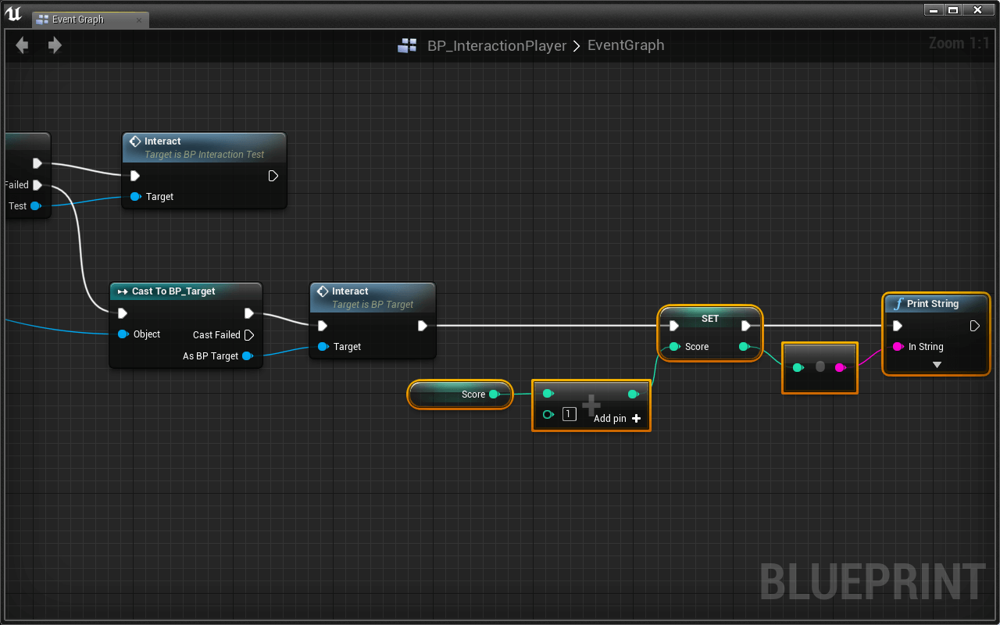
Displaying Your Score
We’re ready to display our score to the user. We could draw the score in screen space. This is an effective approach in monoscopic experiences used by many developers. Unfortunately, this solution is never appropriate for virtual reality. Information drawn directly “on” the screen cannot be seen properly at depth by both eyes.
Beacuse we can’t draw our score directly on the screen, we need to display the information somewhere in three dimensional space. There are two basic categories of three dimensional UI for VR: player relative and world relative.
Player relative interfaces are attached to the player as they move through the environment. A heads up display or HUD is a good example of a player relative interface. This strategy can be effective in VR, but there are significant challenges to displaying this information in a way that is comfortable and intuitive. Player relative UIs are most successful when they are either grounded in a cockpit or not persistent.
World relative interfaces are displayed in the environment and detached from the player. These UI elements are usually static and positioned in relation to other elements in the scene. This strategy is the least obtrusive, easiest to implement, and most similar to real life. Whenever possible, we recommend you use this technique.
Let’s create a world relative score element now.
- Create an Actor Blueprint named BP_Scoreboard.
- Add a Text Render component.
- Set Text to “0”
- Change its Text Render Color, Alignment, and World Size as desired
- If you want your text to always be visible and not depend on lighting, set Text Material to M_EmissiveText. We talk more about this in Lesson 5.
We now have a simple scoreboard that displays text in the world using a Text Render component. Let’s add a new event that updates the score. We want this event to take an input value of the new score that the scoreboard should display. This way our BP_InteractionPlayer can update the scoreboard and tell it what the score is.
- Add a new custom event called UpdateScore.
- In the Details panel click New in the Inputs tab
- Rename the NewParam to Score
- Set the input’s type to Integer
- Compile
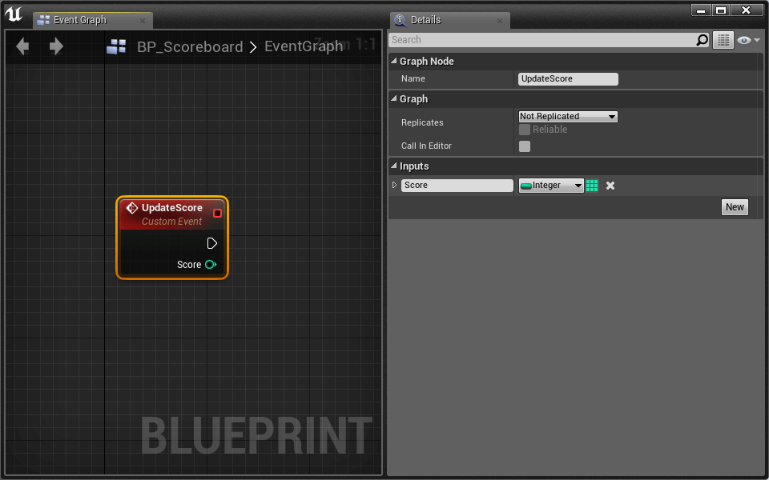
Now when we fire UpdateScore it will have a Score input. It’s up to BP_Scoreboard to update the displayed score. Let’s do that.
- Right-click and search for Set Text (TextRender)
- UpdateScore > ScoreSet Text > Value. UE4 will place an intermediary integer to text conversion node.
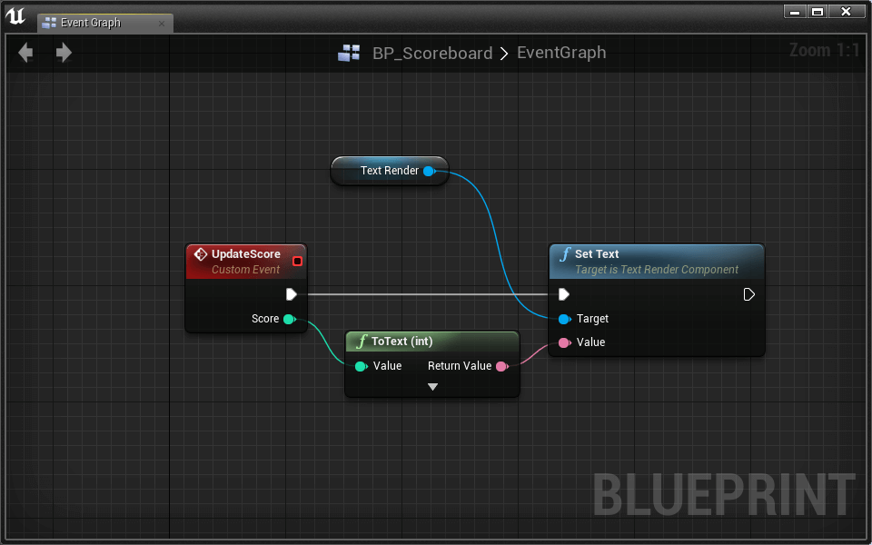
- Place a BP_Scoreboard in the world where the player can see it.
Great! BP_Scoreboard is finished, now we just need to call UpdateScore from the player blueprint whenever we hit a target.
- Open BP_InteractionPlayer.
The problem here is that we need a reference to the BP_Scoreboard in order to fire the UpdateScore event. Fortunately there is a node that will get all the BP_Scoreboards in the level. Since we just have one scoreboard, we can find it easily this way. The node is called Get All Actors Of Class.
Get All Actors Of Class is an expensive operation, meaning that if you use it a lot, your experience will run slow and have bad performance. Avoid using it consistently while the game is running.
- Place a Get All Actors Of Class node.
- Select BP_Scoreboard from the Actor Class dropdown.
Since we don’t want to use Get All Actors Of Class every single time we hit a target, let’s use it only once when the game starts, then store the reference to the scoreboard in a variable.
- Create a new variable named Scoreboard.
- Search “BP_Scoreboard” for it’s *Variable Type
- Set its type to BP_Scoreboard > Reference.
Now we have a variable that can hold a reference to a BP_Scoreboard actor. Let’s get the correct scoreboard and set this variable when the game starts:
- BeginPlayGet All Actors Of Class
Get All Actors Of Class outputs an array of actors. This is helpful if there are many actors of that type, but we know there is only one BP_Scoreboard in our level. Let’s get the first actor from the Out Actors array.
- Pull a wire from the Out Actors and place a Get node.
- Pull a wire from the Get output (this is your BP_Scoreboard) and place a Set Scoreboard node.
- Get All Actors Of ClassSet Scoreboard
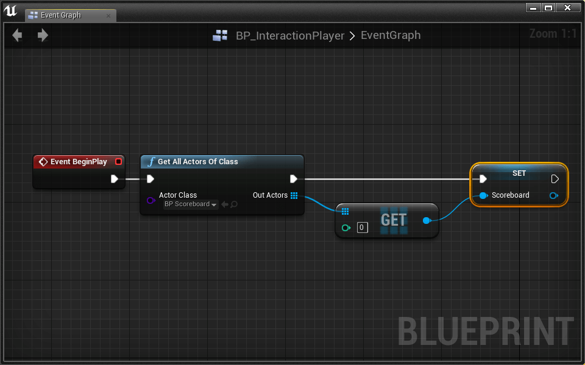
We now will always have a reference to the scoreboard in the world. Let’s use it to update the score whenever we hit a target.
Challenge:
Use the Scoreboard variable and its UpdateScore event to update the displayed score whenever the player hits a target.
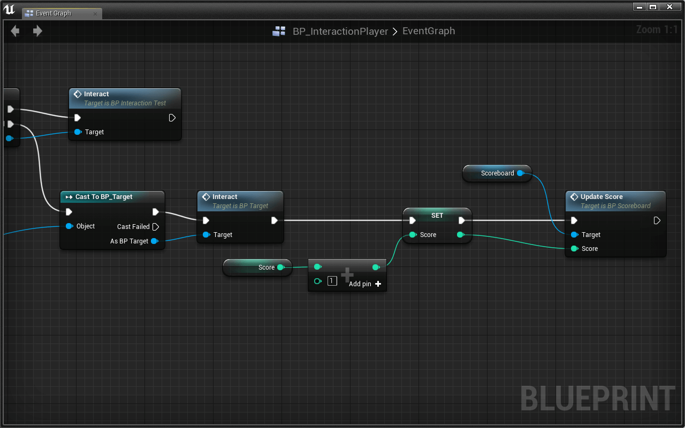
Very nice! The scoreboard is up and running.
Bonus Challenge:
We can add an “arcade” scoring effect if you’re up for a challenge.
Use a Spawn Actor from Class node to spawn a BP_ScoreAddition when you hit a target. Once the BP_ScoreAddition is spawned, it will handle its own animation and destruction. Make sure to spawn it in the correct location with the correct Score Addition value.
You can add a nice sound effect too! Use the Spawn Sound at Location node.
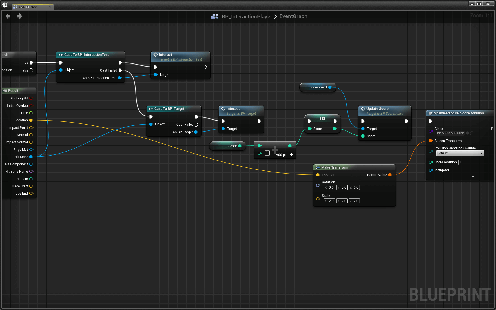
Time to make more complex targets!
> Confused about arrays? Click here to learn what they are and how they work. [TODO: array lesson]
Color Changing Target
Our next target is similar to the basic target in that it explodes and awards points, but this one also randomly changes states between red, green, and gold.
Let’s get started by reusing some of our previous work:
- Right-click the BP_Target actor in the Content Browser.
- Select Duplicate.
- Rename the new actor blueprint BP_Target_ColorChange.
- Open the new blueprint.
Let’s start by making the target randomly change colors. To do that, we’re going to need to change the target’s color at random times.
- Create a new custom event called ChangeType.
Change type is going to work by picking a random number between 0 and 2. Depending on the number it chooses, it will change the target’s color.
- Place a Random Integer in Range node.
- Give it a Min value of 0 and a Max value of 2.
- Place a Switch on Int node.
- Click the Add pin button 3 times. This will add 3 execution pins labeled 0, 1 and 2.
- Random Integer in RangeSwitch on Int
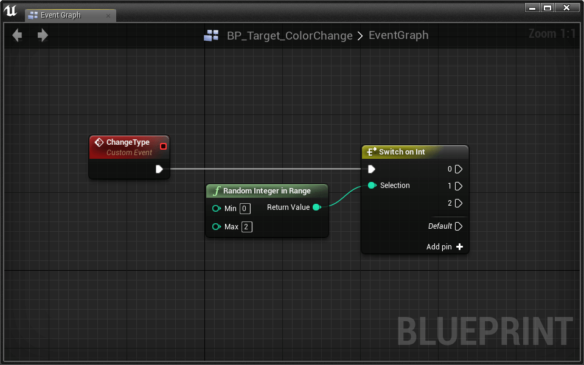
Switch on Int works by executing different code depending on the integer that was given to it. In this way, we’ll be able to do different things depending on whether the random number was a 0, 1, or 2.
Switch statements can be thought of as a specialized Branch.
Challenge:
Use the Switch on Int outputs to randomly change the target’s color using the Set Material (Target) node. Use any of the materials in the Materials > Targets folder, or make your own Material Instances based off of them!
There are a lot of options to play with to personalize your targets. You could even randomize their static meshes using Set Static Mesh (Target)
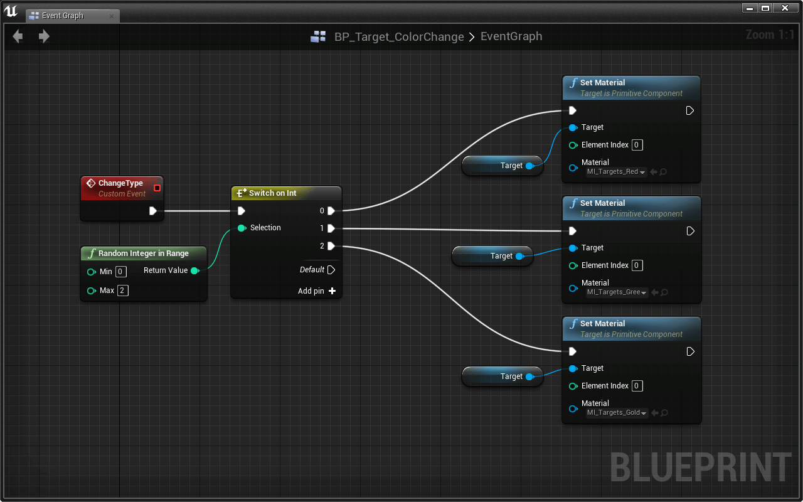
- BeginPlayChangeType
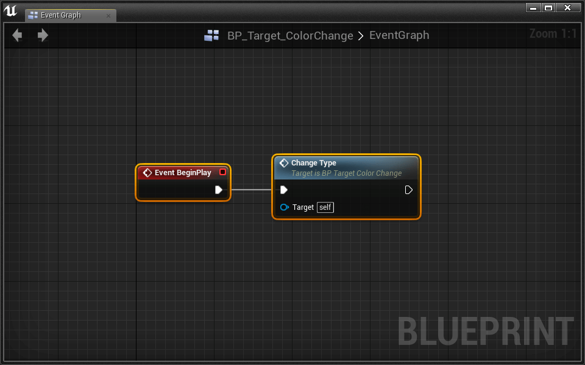
- Place multiple BP_Target_ColorChange actors in the level.
When you press play, the targets should randomly start with one of your three materials. Every time you press play, their materials will be different.
Not only do we need to set the target’s color, but we also need to change its point value. We’ll do this by storing the value in a variable. We’ll then be able to use that variable’s data to change the player’s score.
- Create a new Integer variable named Value.
- When the target changes color, update the Value variable with the proper point value. Make sure the colors and values line up the way you want.
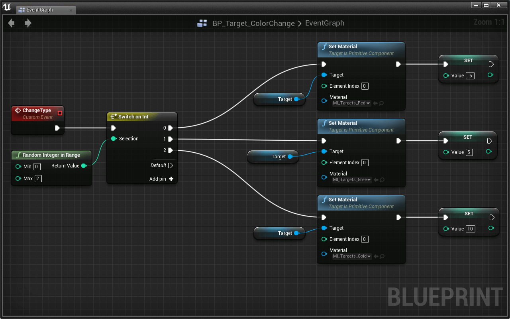
Before we move on to actually interacting with the color changing target, let’s make the target randomly change colors over time. We do this by firing the ChangeType event at random intervals.
In Lesson 2, we learned how to use looping Timers to call a function over and over again. This works great, but we wouldn’t be able to change the timer’s interval duration. Instead, we want each interval between ChangeTypes to be random too. We can achieve this using a Delay and then calling ChangeType within itself.
Challenge:
Using a Delay, a Random Float in Range, and a ChangeType node, set up the ChangeType event to infinitely loop at random intervals.
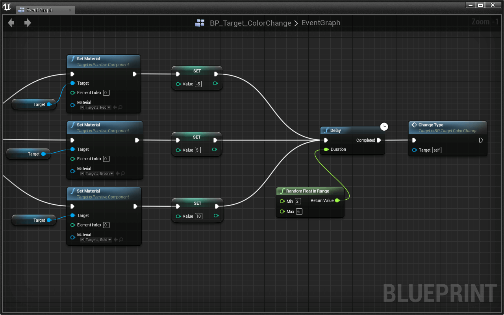
Very cool! Now when you press play, your targets will continue to change type over time.
The last thing we need to do is get the player blueprint communicating with the new type of target.
Blueprint Interfaces
- Open BP_InteractionPlayer
Our chain of Cast To… nodes is about to get really long. In fact, if we continue doing it this way, we’ll have a total of 5 Cast To… nodes with all our different types of targets. When code looks like this, with lots of repetition, there is usually a better way.
So far we’ve done a good job making each actor have a generalized function name called Interact. This allows the BP_InteractionPlayer to do what it does best, interact. But we are still checking what type of actor we’re looking at before we can interact with it. The player should be able to interact with everything, then whatever we’re looking at can decide whether or not it should do anything.
We can do this using a Blueprint Interface. Blueprint Interfaces, or BPIs, allow us to create types of messages. Any blueprint can send these messages to anything else. It’s then up to the receiver to respond to the message or not.
- Go to the Level Editor.
- In the Content Browser click Add New or right-click in empty space.
- Hover the Blueprints submenu and select Blueprint Interface.
- Name it BPI_Interaction.
- Open the new BPI.
This is the Interface Editor editor. It only allows you to define function names. These functions are the messages mentioned above. We can’t add code in here because it is up to the receiver of the message to know what to do.
- Rename NewFunction_0 to Interact.
We’re going to add one additional thing in here that we haven’t talked about yet. Currently, the player blueprint assigns value to whatever target it hits. That’s because previously we knew what kind of target we were hitting. Now, all the player will do is send a message to an unknown actor. Therefore, it’s up to the targets to tell the player how much they’re worth. We do that by adding a score Output to the BPI’s Interact message.
- Add a new Output using the New button.
- Name it Score.
- Set it’s type to Integer.
- Compile and Save.
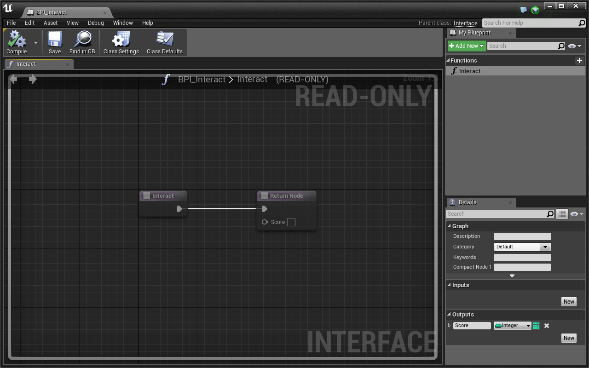
That’s it! You can close the Interface Editor.
Using our BPI
Now that we set up a BPI, let’s update all our old code. Don’t worry, it won’t take too long!
The first thing we have to do is add our new Interface to each blueprint. This will allow each actor to receive those types of messages.
- Open BP_Target.
- Delete the Interact event node
- Click Class Settings in the blueprint Toolbar.
- In the Details panel, add your new BPI_Interaction interface.
- Compile.
In the My Blueprint panel you’ll see a new tab called Interfaces with your Interact function underneath.
If we added a BPI function that didn’t use an output, you’d add it as an Event to the Event Graph. Since ours uses an output, it gets placed in the special Interface function area.
- Copy all the old Interact code and paste it in the new Interact function.
- Connect the code in between Interact and Return Node
The Return Node is new to you, but you’ve probably already assumed what it does. Whatever value you plug into Score is the function’s output.
- Give the Score output a value of 1.
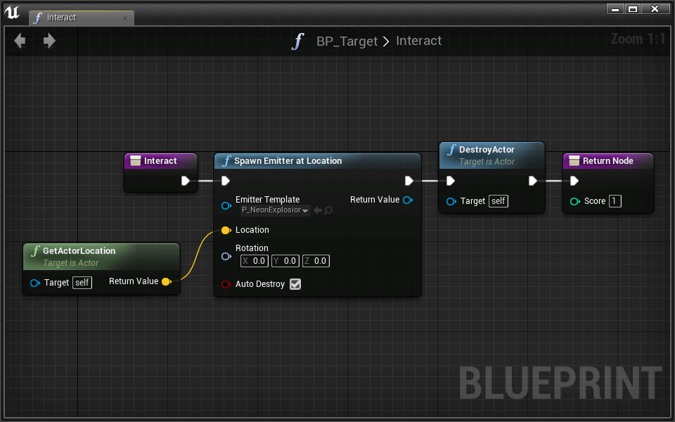
- Repeat this process for BP_Target_ColorChange.
- Don’t forget to Compile after adding your interface.
- Make sure to output the blueprint’s Value variable because its not a constant number like it is for BP_Target.
- Your interactions won’t work yet, but they will soon enough!
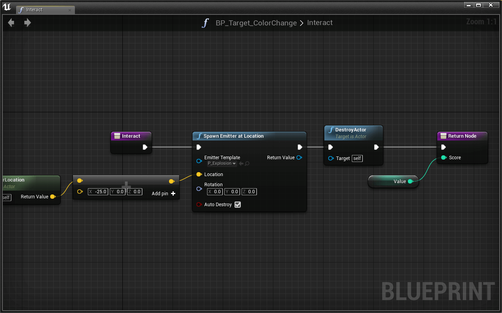
Now that all our actors are set up to receive Interact messages, let’s send those messages from our BP_InteractionPlayer.
- Open the BP_InteractionPlayer Event Graph.
It’s time for some node cleanup!
- Delete all the Cast To… and Interact nodes.
- Replace them with a single Interact (Message) node.
- Break Hit Result > Hit ActorInteract > Target
- Use the Score output as the value you add to your current score.
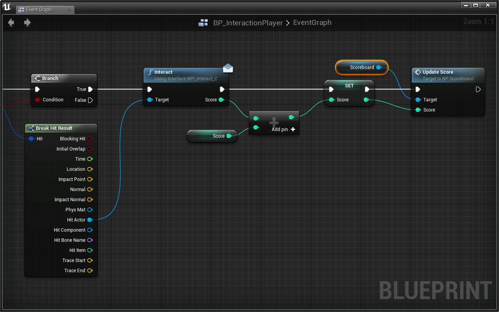
Test it out! Interacting with BP_InteractionTest won’t work anymore, but both your BP_Target and BP_Target_ColorChange interactions will.
If you want your BP_InteractionTest to work, all you have to do is set up the BPI the same way we did for the two targets.
Our BPI removes unnecessary code and allows us to create new interact-able actors without opening BP_InteractionPlayer. Major win!
In general, casting is a great way to communicate between actors. The moment you start casting too much, or see a repeated process, check if you can use a BPI.
Not sure why that was important or how Blueprint Interfaces work? Click here to learn more about them and when to use them.[TODO: more indepth BPI]
Pop Up Target
Here’s what the Pop Up Target looks like:
- Duplicate the BP_Target, name it BP_Target_PopUp
Since we’re using a BPI, our new target is already set up for interaction. If you place one in the world, it will explode when you click on it. The issue is that it currently only behaves like a regular BP_Target. Instead, we want to program it to continuously pop up and back down. That way we can hide it behind cover so the player can only hit it at certain times.
To do this we’re going to use an Unreal Engine tool called Timeline.
- Right-click and search Add Timeline…
- Place the timeline and name it UpAndDown
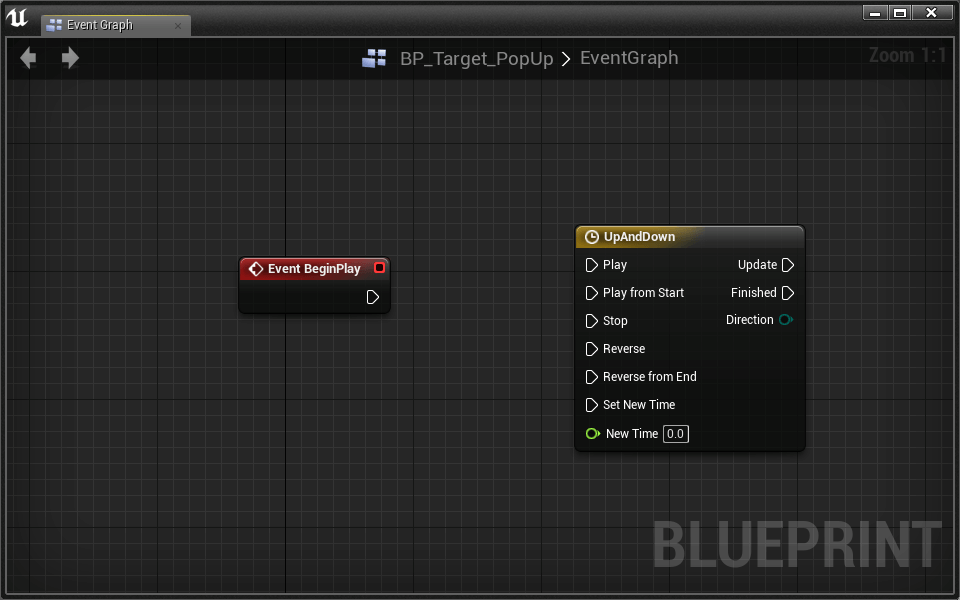
- Double-click the new timeline to open up the Timeline Editor
- Click the ƒ+ in the upper left corner to add a float track.
- Name it Data
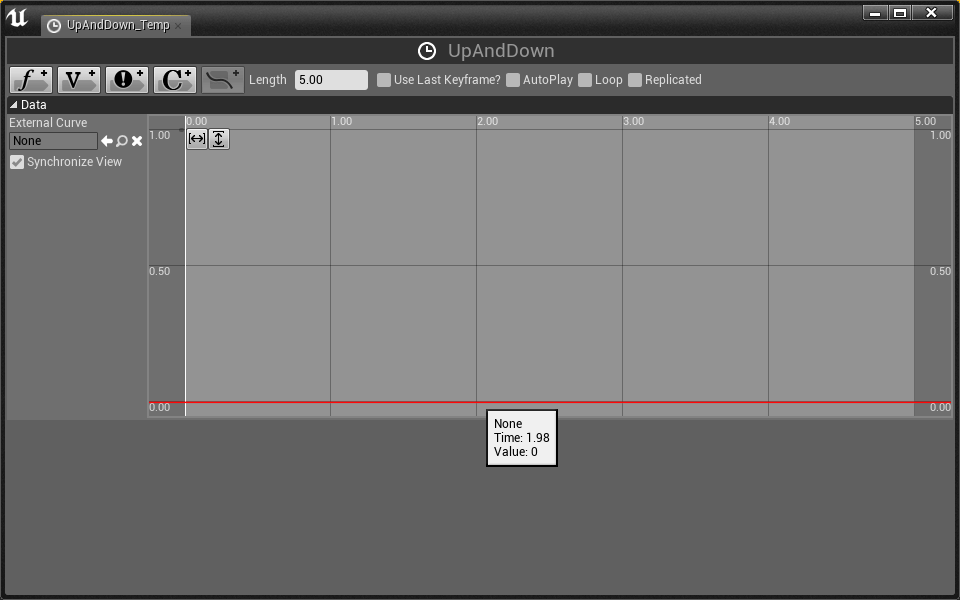
A Timeline allows us to create our own curve using keyframes. We then will be able to use that curve in our code by changing our target’s position based on the value of the curve at a certain point in time.
Keyframes allow us to define the value of the curve at a certain time. The engine then does the rest to interpret the value in between the keyframes. Let’s do it!
- Hold Shift and Left-Click anywhere in the curve. You just added a keyframe!
- Select the keyframe and set its Time and Value to 0
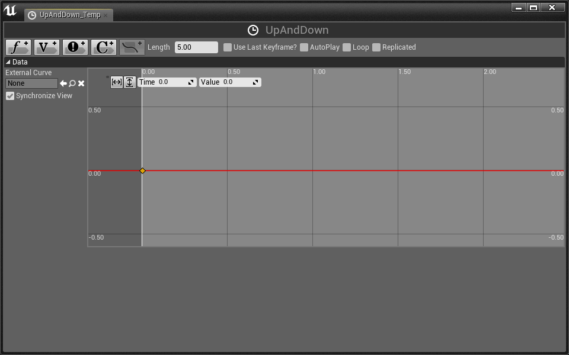
- Add another keyframe and set its Time and Value to 1
- Add a final keyframe and set its Time to 5 and its Value to 0
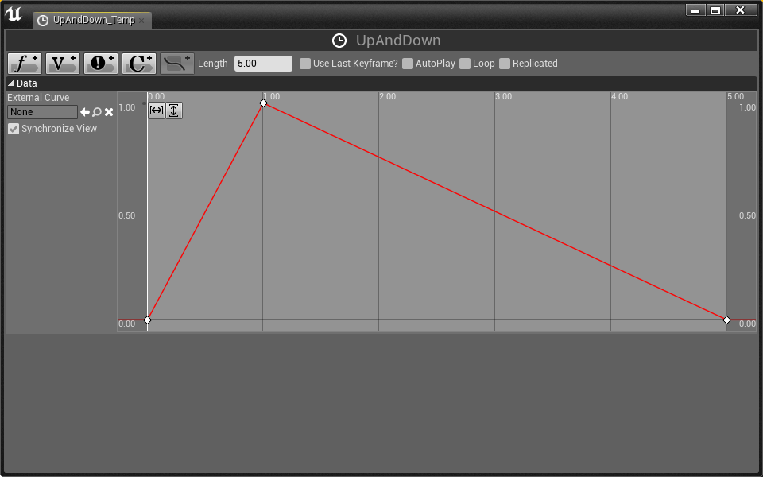
Great! As you can see, the value of this curve will increase from 0 to 1 in the first second, then slowly decrease from 1 to 0 over the next 4 seconds.
At this point, the timeline is quite linear. Let’s make the values curve a bit more to give the target’s movement some character.
- Right-click the first keyframe and select Auto under the Key Interpolation options.
- Do the same for the second keyframe.
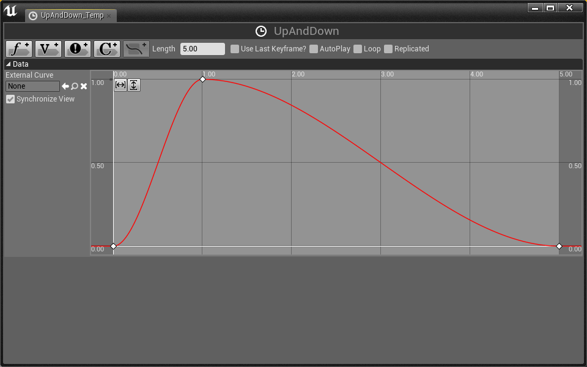
Now the timeline actually curves a bit. You can adjust the tangent lines to customize your curve. Feel free to play with the other types of Key Interpolation.
Excellent! We’re done editing the Timeline for now, go back to the Event Graph.
You’ll notice a new Data output on UpAndDown. This will output the value of the curve at any given time.
- BeginPlayUpAndDown > Play from Start
- For testing purposes, place a Print String
- UpAndDown > UpdatePrint String
- Print UpAndDown > Data
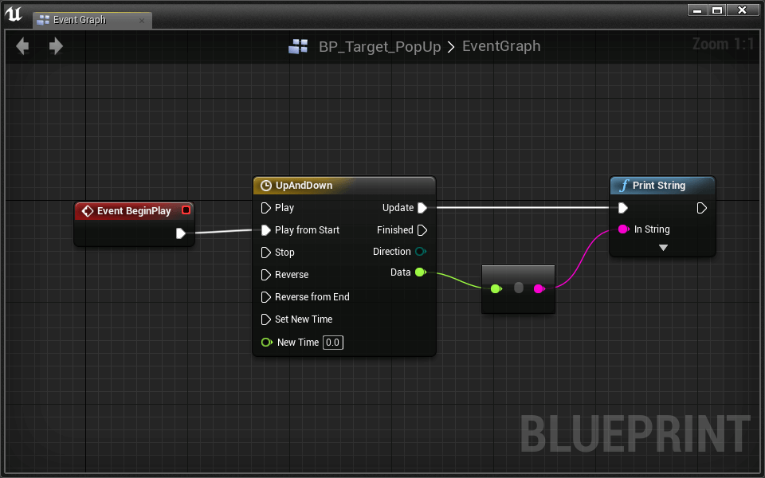
Let’s test out our timeline.
- Place a single BP_Target_PopUp in the level.
- Press Play and watch the values printed on the screen.
When you press Play, you should see the values of our curve print from 0 to 1 to 0 for 5 seconds.
We’re going to use these values to move our target. Value 0 means our target will be at its starting position, and 1 means our target will be at its highest position. The best way to do this is to think of the values between 0 and 1 as percentages of a total offset from the target’s origin position. Let’s say our total offset is 20 in the Z-direction. This is what the math looks like:
Let’s start by storing the target’s origin position.
- Create a new Vector variable named Origin
- Set Origin equal to the target’s location just before running the timeline
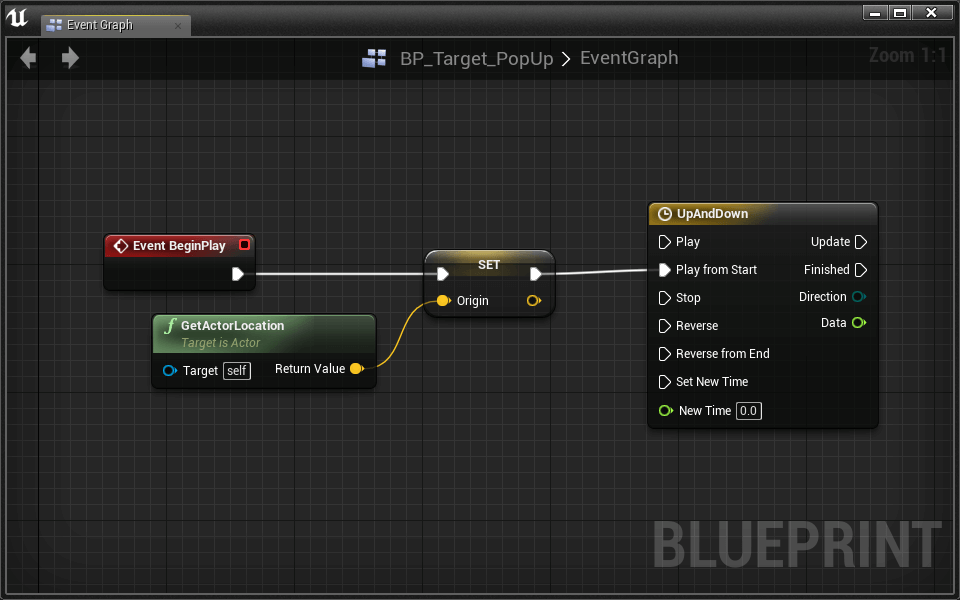
Challenge:
Move the target up and down using the math equation above and the SetActorLocation node.
Test it out to verify that each BP_Target_PopUp immediately jumps up and then slowly moves down.
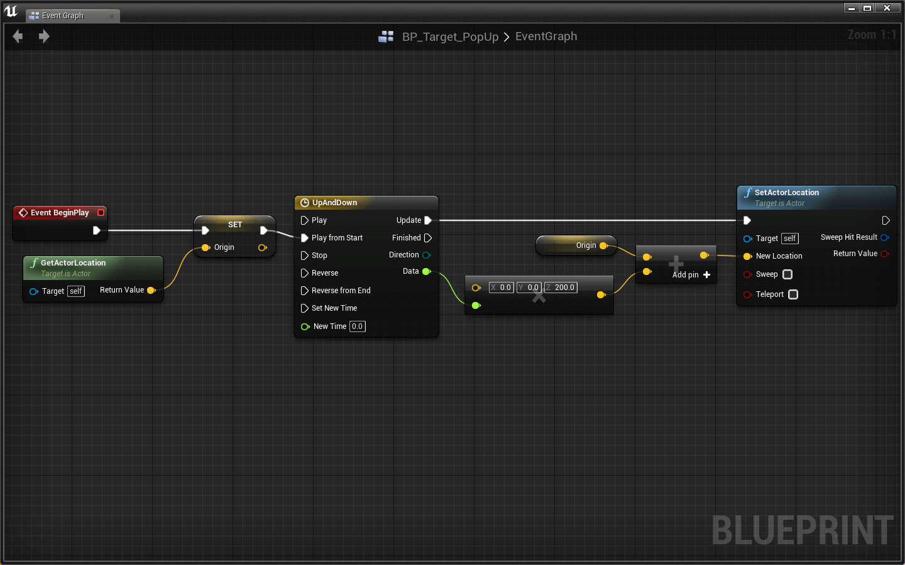
Pop Up Continuously
As implemented, our pop up targets jump once at level start. Let’s make them jump up and down repeatedly.
- Open the UpAndDown timeline again.
- Check the Loop option at the top.
Our looping timeline causes targets to move up and down without pause in between cycles. Let’s create downtime between jumps.
- Change the length of the timeline to 8.
Now there is a 3 second pause at the end of the jump.
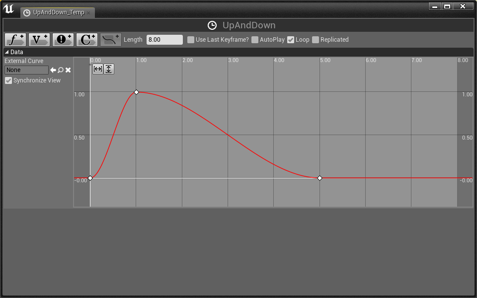
The BP_Target_PopUps should continuously jump up and down with a brief pause at the bottom.
Challenge:
Using a Delay and a Random Float in Range, make the BP_Target_PopUps randomly start their jumping so they don’t pop up immediately and in unison.
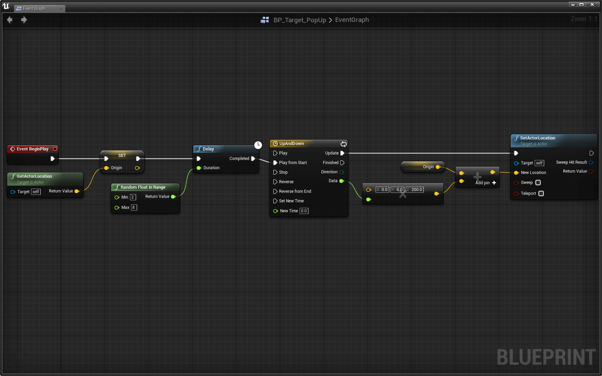
Wonderful! All our BP_Target_PopUps randomly pop up and down. Go ahead and place some in the level behind obstacles.
You’ll probably want to add some of your own static mesh obstacles into the scene. A quick way to see all the static meshes in your content browser is to use the Static Mesh filter.
- In the Content Broswer, open a high level folder like Content or Meshes
- Open the Content Browser’s Filters menu
- Select Static Mesh
Creating a New Curve
We’ve implemented a timeline curve that defines the movement of BP_Target_PopUp. If we wanted to create another timeline with the same curve, we’d have to recreate the new curve manually. This isn’t ideal. Fortunately, there is an alternative approach that allows us to reuse and edit curves separately from individual timelines.
- Open Blueprints > Utility > Curves
In this folder, you will find a few curves we’ve created for you. Let’s create our own.
- Right click and select Miscellaneous > Curve
- Select CurveFloat in pop up window
- Name the curve “Curve_MyCurve”
- Open your new Curve_MyCurve
Here we can define our curve just like we did in the timeline editor.
- Create a new curve for your pop up target
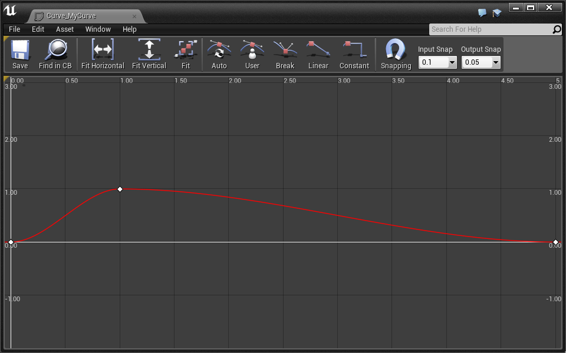
- Save Curve_MyCurve
- Select Curve_MyCurve in the content browser and return to the UpAndDown timeline (This part is important)
- Click the button that looks like a curve from the top bar
Just like that, Curve_MyCurve is now imported into our timeline.
- Disconnect UpAndDown > Data
- Connect UpAndDown > Curve My Curve
Fantastic! BP_Target_PopUp will now move along your custom curve.
Any changes we make to Curve_MyCurve in the curve editor will be reflected in all referencing timelines.
Great job! You just learned how to animate with timelines and use external curves to drive those animations. Let’s wrap this target up with a quick challenge:
Challenge:
Right now the BP_Target_PopUps are worth as many points as regular BP_Targets. Make the BP_Target_PopUps worth 5 points rather than 1. Do this in BP_Target_PopUp’s Interact interface function.
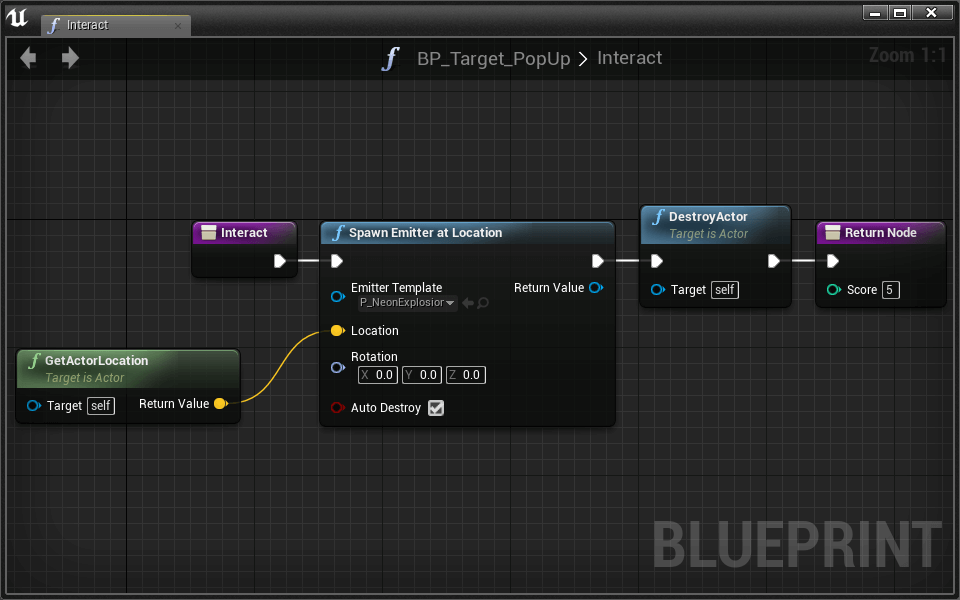
Wild Target
- Duplicate the BP_Target, name it BP_Target_Wild
How does our Wild Target differ from the normal target?
- The Wild Target doesn’t disappear
- The Wild Target is worth more points on click
- The Wild Target moves around like crazy!
Let’s start by taking care of the first two points in the BP_Target_Wild’s Interact interface function.
Challenge:
Ensure that a BP_Target_Wild does not disappear on click, and is worth 3 points.
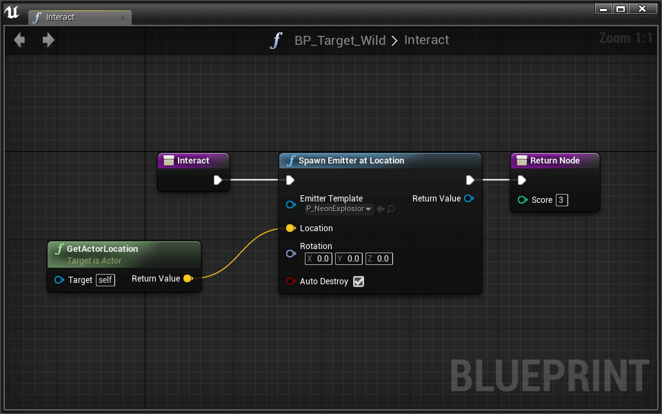
- Place a BP_Target_Wild in the level where it can be seen from the start point.
Test it out to make sure it works. Press Play and click on the stationary Wild Target. It shouldn’t disappear and you should get points.
Great stuff. We want the wild target to start hidden from view, then come into view as a target for a short time.
- Move the BP_Target_Wild somewhere in the level where is can not be seen from the start point.
Now let’s animate that target!
Matinee
Matinee is UE4’s powerful scene animation tool. It allows you to easily create in-game cinematics and dynamic gameplay using keyframes similar to Timeline. We’re going to use it to move the wild target all over the shooting gallery.
- Click Cinematics on the Level Editor’s Toolbar
- Select Add Matinee.
The Matinee Editor opens automatically. We’ll be spending most our time in the Tracks panel of this editor.

- Right-click in the blank area in the left of the Tracks panel.
- Select Add New Empty Group
- Name it Target
We just created a new animation group. It’s called a Group because we can add many actors to it. Every actor in the group will be effected by the animations we define in it.
- Select the BP_Target_Wild in the Level Editor Viewport or World Outliner.
- With the actor selected, go back to the Matinee Editor and right-click the Target Animation Group.
- Select Actors > Add Selected Actors
The Wild Target is now a part of the Animation Group! We can test that we did it right by selecting the Target track. When we do, the target in the world should become selected.
- Go to the Matinee editor and right-click the Target Animation Group.
- Select Add New Movement Track.
We’re ready to start creating animation keyframes. Matinee automatically places a keyframe at the start, its marked with a small red triangle.
- Move the scrubber to the 2.5 second mark.
- Press the Enter key.
You just placed a new keyframe. You may also notice the red recording icon in the lower left of the screen. That means that where ever you move the Wild Target, its position will be the value of the keyframe.
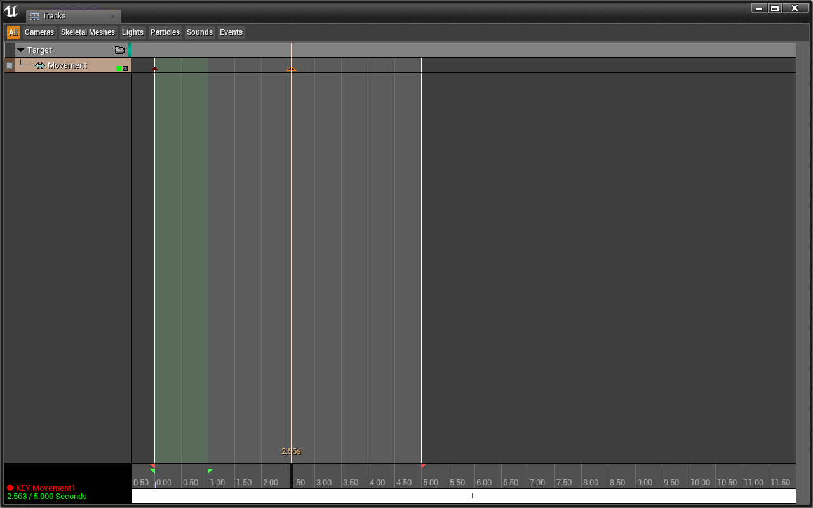
- In your level, move the Wild Target out into the open. A trail will follow it showing the path that the target will make when animating.
Now if you drag your scrubber between the two keyframes, you should see the Wild Target move between the two points.
Excellent! Add as many keyframes as you want. Feel free to make the matinee longer too. Do this by moving the small red scrubber at the end of the Matinee timeline. When you’re done with your Matinee animation, move on to learn how to trigger it.
Triggering our Matinee
First, to test our Matinee, let’s play it when the game starts.
- Close the Matinee if you haven’t already.
- Click on the new Matinee Actor in the World Outliner.
- Check the Play on Level Load option in the details panel.
- Notice all the other options here for future use.
Test it out! Your target should fly all over the world when you press Play.
Now, lets set it up so the Matinee starts after a delay. We’ll do this using the Level Blueprint.
- Uncheck the Play on Level Load option in the details panel.
- Open up the Level Blueprint by clicking Blueprints > Open Level Blueprint in the Toolbar.
- With your MatineeActor selected in the Level Editor, right-click and Create a Reference to MatineeActor. You can also click and drag from the World Outliner into the Level Blueprint.
- Drag a wire from Matinee Actor and place a Play node.
Challenge:
Using the BeginPlay event and a Delay node, play the Matinee after 30 seconds.
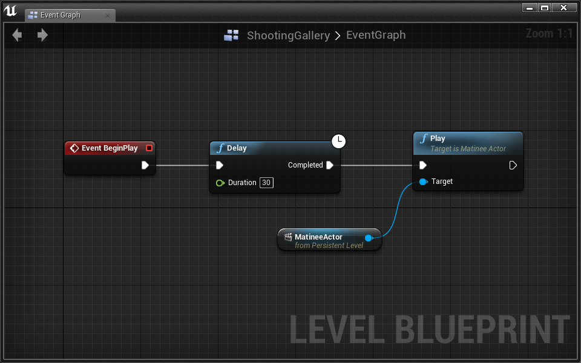
Woo! Now we have a crazy target that comes in after 30 seconds, giving the player a quick chance to rack up as many points as possible.
Go ahead and Play you experience. Have fun!
Conclusion
Wow! We’ve covered a lot of material in this lesson:
- Blueprint Communication
- Creating Custom Events.
- Using Cast To nodes to fire events on other actors.
- Using Blueprint Interfaces when you find a common interaction between multiple blueprints.
- Creating custom curves with Timeline
- Animating actor properties with Matinee
Project 3 - Getting Creative
Your Interactive Experience
In this assignment, you’ll invent ways to interact in a level of your own design. The experience should allow the player to “touch” the environment with gaze and simple input.
- Create at least two new interactable actors that respond to player trace
- Build a new level that meaningfully incorporates your interactable actors
Trace communication is an extremely versatile tool. We expect you to submit a project that applies lesson techniques in a new way- don’t build another shooting gallery.
Getting started
You might discover an interesting interaction technique by experimentation. Or you could start with an activity and setting before devising specific game mechanics. Consider the following questions as you get started:
- Should the player discover interactivity by experimentation, or does the level provide direction?
- Do interactable actors also interact with eachother?
- Is the experience open-ended, or does it have a distinct beginning and end?
Creating a seated experience
As you build your level, keep in mind that the player should be constrained to a single location.
We experimented with scale and the “desktop” in the shooting gallery, but don’t feel obligated to continue in this direction.